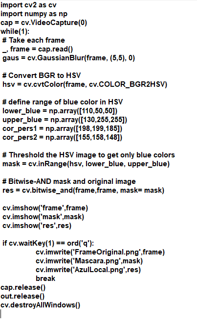
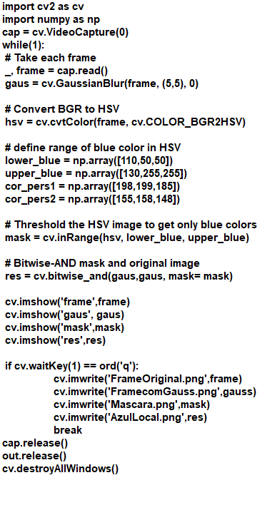
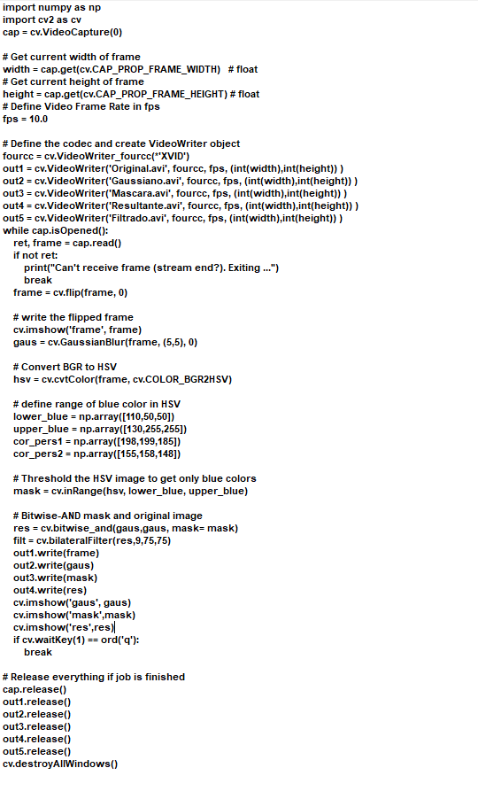
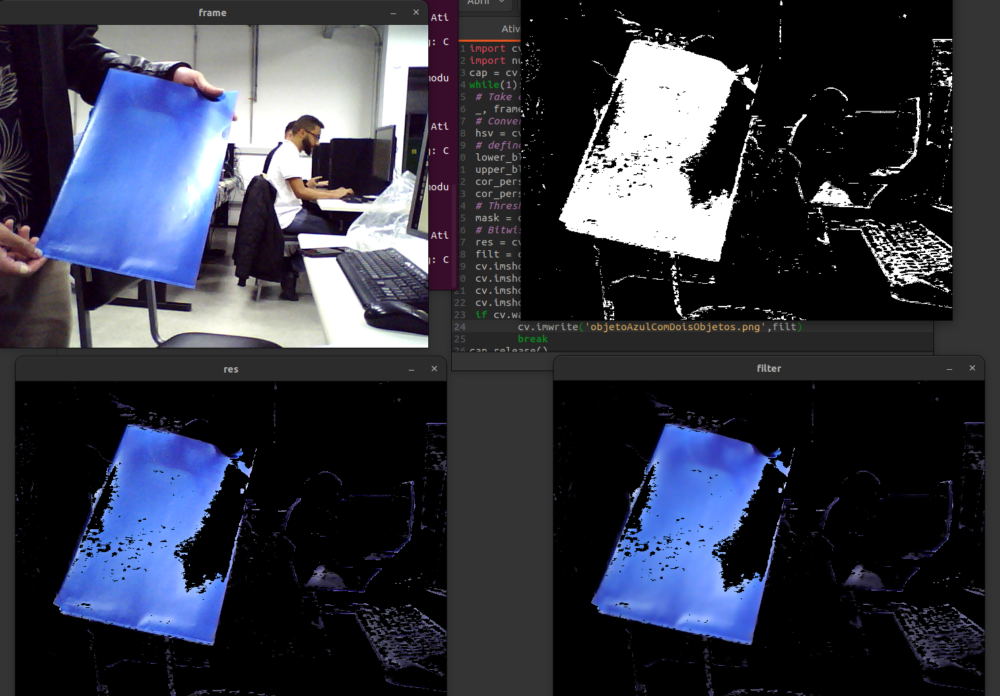

Introdução
O experimento a seguir busca estudar os princípios e efeitos da conversão de cores e da aplicação de máscaras e detecção de cores. Para tal, será utilizado uma webcam e comandos do OpenCV.
Objetivos
- Compreender o processo de conversão de cores em computação
- Aplicar o conhecimento na prática com OpenCV
- Experimentar outras funcionalidades
Fundamentos básicos
A cor é um fenômeno percebido e não uma dimensão física como o comprimento ou a temperatura, sendo resultado da nossa representação mental sobre comprimentos de onda capturados pelos nossos olhos que são refletidos por determinadas superfícies.
O OpenCV utiliza a função COLOR_BGR2HSV para converter uma imagem BGR para HSV, o que torna a representação de cores mais fácil e, consequentemente, torna a extração de cores mais fácil. Os passos para o rastreamento de cores em vídeo são: converter cada frame do vídeo para HSV, colocamos o limite de detecção de cores para a cor desejada e extraímos essa cor dos frames do vídeo. A máscara em si, como descrita nos algoritmos abaixo, apenas detecta a cor, tornando-a branca e destacando-a do resto das cores, que se tornam pretas, é necessário então unir os frames originais à mascára para que a cor azul fique presente.
Materiais e métodos
- Ubuntu
- Miniconda
- Python
- OpenCV
- Webcam
Parte 1 (questão 2)
A partir do website https://docs.opencv.org/4.x/df/d9d/ tutorial_py_colorspaces.html disponibilizado pelo professor, foram utilizados os códigos presentes nele para a realização das questões solicitadas.
A)
Aqui foi utilizado o algoritmo disponibilizado pelo site do OpenCV, onde também foi utilizado parte do código do relatório 1 para salvar as imagens ao clique de uma tecla com o comando imwrite.
B)
Aqui o algoritmo anterior foi modificado para que o filtro Gaussiano do experimento anterior fosse aplicado à imagem resultante. Foi alterado o comando bitwise para receber os parâmetros do filtro Gaussiano.
C)
Aqui foi utilizado parte do algoritmo do item D do relatório 1 para realizar a captura de quatro vídeos contendo os frames originais, os frames com o filtro Gaussiano, os frames com a máscara e os frames resultantes. Basicamente foram unidos os algoritmos do item B desse relatorio ao do item D do relatorio 1, aplicando pequenas modificações de parametros.
Parte 2 (questão 3)
Resultados e análise
Parte 1 (questão 2)
A)
Assim como esperado, o algoritmo retornou três imagems, uma contendo os frames originais, outra contendo a máscara de detecção de cor e outra contendo a união da máscara com os frames originais.

B)
Aqui está o resultado da aplicação do filtro Gaussiano ao resultado final da etapa anterior, é possível notar uma pequena suavização dos detalhes, embora não muito significativa.
C)
Aqui são os resultados da gravação de vídeos utilizando os comandos estudados neste experimento. Primeiro temos os frames originais, em seguida os frames originais com o filtro Gaussiano, em seguida os frames da máscara e em seguida os frames resultantes da união.
Parte 2 (questão 3)
Conclusões e Comentários finais
Neste laboratório foram estudados conceitos muito interessantes da aplicação da conversão de cores. A correção de cores é muito importante para a definição do tom que se deseja obter de um material áudio-visual, como em filmes ou fotografias. A detecção de cores pode ser utilizada para diversos fins, como detecção de resíduos ou de objetos de difícil detecção para o olho humano.